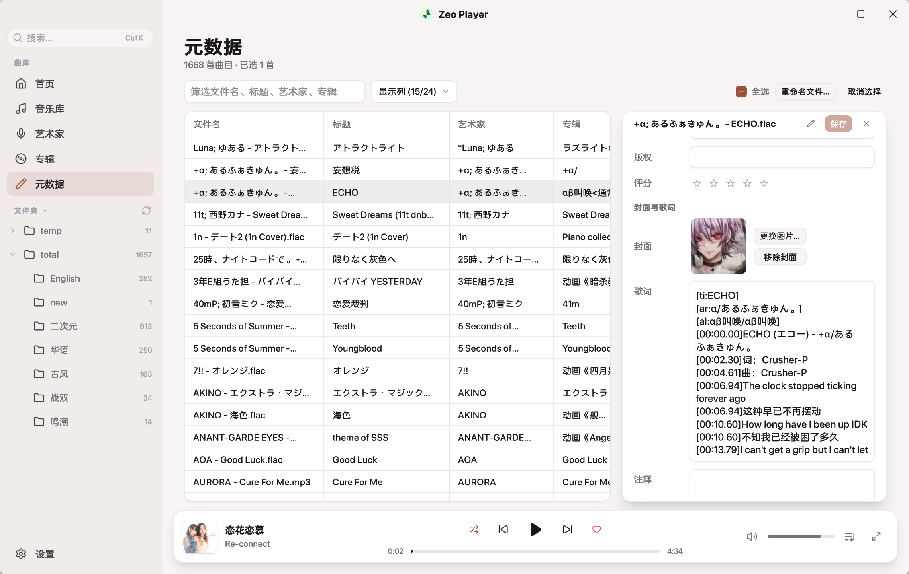
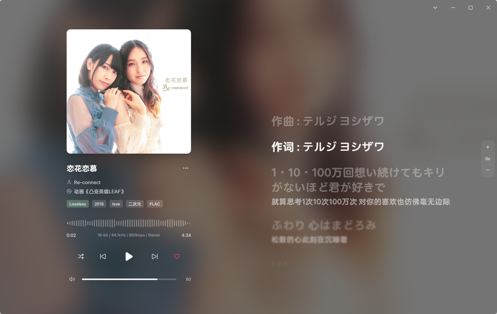

⌘K / Ctrl+K 呼出，键盘搜索曲目、跳转设置
{track:02d} - {artist} - {title}；同名 .lrc 歌词与封面图自动联动改名，改名前检查冲突


开源免费，通过 GitHub Releases 分发。
支持 MP3、FLAC、WAV、AIFF、M4A（AAC / ALAC）、AAC、OGG Vorbis。
想自己编译的话，克隆仓库后 nsh run . 即可，详见 README。